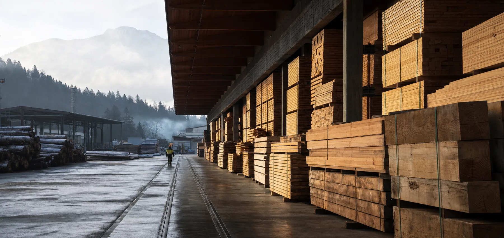
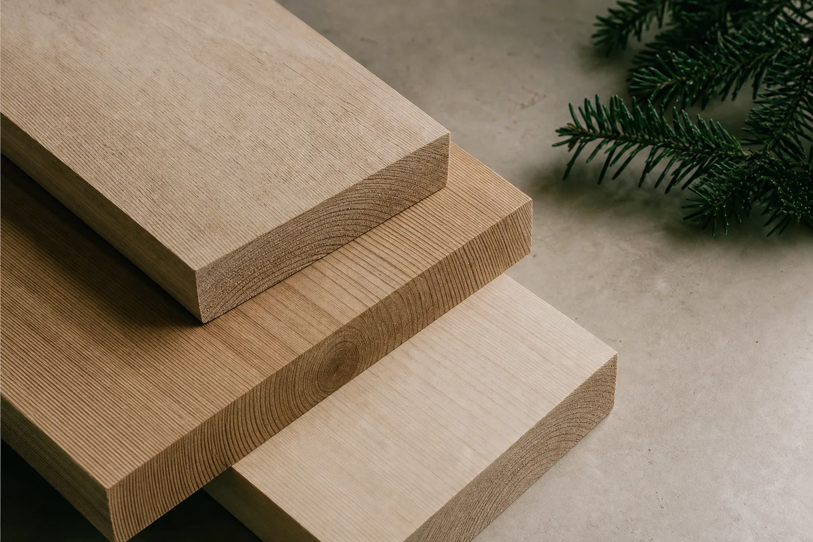

Leggiamo la richiesta
Uso, misure, ambiente e finitura prima del codice prodotto.

Materiali · preparazione · logistica
Forniamo imprese, falegnamerie e progettisti con materiali leggibili, misure chiare e preparazioni che riducono il lavoro a valle.
Nord Legnami / 01
Non vendiamo “legno” in astratto. Partiamo da struttura, ambiente, finitura e tempi per proporre la specie, il formato e la preparazione corretti.
Materiali

Selezione e controlloMetodo
Uso, misure, ambiente e finitura prima del codice prodotto.
Disponibilità, qualità visiva e compatibilità tecnica.
Selezione, taglio e imballo organizzati per il cantiere.
Ritiro o consegna con tempi e riferimenti leggibili.

Una filiera corta
Il confronto avviene con chi seleziona, prepara e organizza gli ordini. Meno passaggi, più responsabilità sul risultato.
Conosci Nord Legnami ↗